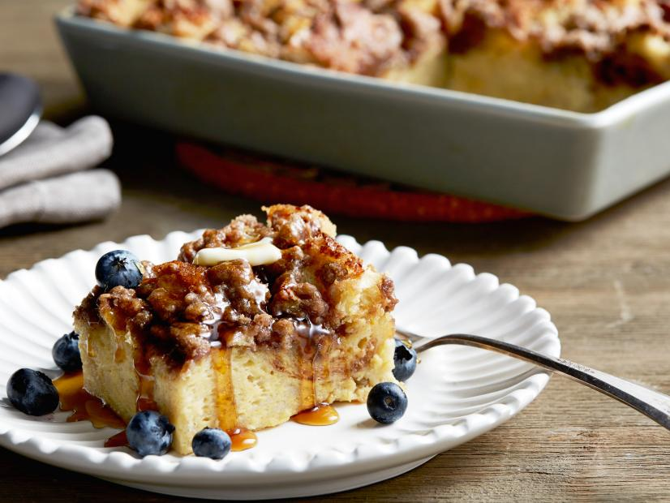

Recipe for Ree Drummond's Cinnamon Baked French Toast

Have you seen that crust? Doesn't it look absolutely amazing? This is not your average run of the mill french toast recipe, but it will be so worth it for that cinnamon crunch with bluebery syrupy goodness.
Do keep in mind that this is an over night recipe that requires 12 hrs in the fridge. This recipe yields 12 servings, has a prep time of 15 minutes, inactive time of 12 hours, and a cook time of 45 minutes.
Ingredients
French Toast
- Butter, for greasing
- 1 loaf crusty sourdough or French bread
- 8 whole eggs
- 2 cups whole milk
- 1/2 cup whipping (heavy) cream
- 1/2 cup granulated sugar
- 1/2 cup brown sugar
- 2 tablespoons vanilla extract
Toppings
- 1/2 cup all-purpose flour
- 1/2 cup firmly packed brown sugar
- 1 teaspoon ground cinnamon
- 1/4 teaspoon salt
- Freshly grated nutmeg
- 1 stick cold butter, cut into pieces, plus more for serving
- Warm pancake syrup, for serving
- 1 cup fresh blueberries, for serving
Directions
- For the French toast: Grease the baking pan with butter. Tear the bread into chunks, or cut into cubes, and evenly distribute in the pan. Crack the eggs in a big bowl. Whisk together the eggs, milk, cream, granulated sugar, brown sugar and vanilla. Pour evenly over the bread. Cover the pan tightly and store in the fridge until needed (overnight preferably).
- For the topping: Mix the flour, brown sugar, cinnamon, salt and some nutmeg in a separate bowl. Stir together using a fork. Add the butter and with a pastry cutter, and mix it all together until the mixture resembles fine pebbles. Store in a re-sealable plastic bag in the fridge.
- When you're ready to bake the casserole, preheat the oven to 350 degrees F. Remove the casserole from the fridge and sprinkle the topping over the top. Bake for 45 minutes for a softer, more bread pudding texture or for 1 hour or more for a firmer, crisper texture.
- Scoop out individual portions. Top with butter and drizzle with warm pancake syrup and sprinkle with blueberries.